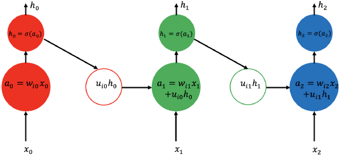
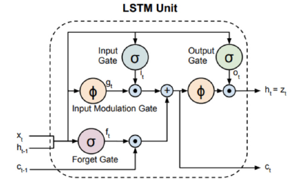

2.1.2 循环神经网络
在解决时序性输入问题的时候，使用最成功的多层神经网络架构当属循环神经网络（RNN）[9]。循环神经网络的结构示意图如图2.3，它可以被视为一种特殊的神经网络，这种神经网络允许隐藏层单元同时接收当前时刻的输入及上一时刻的状态作为输入。循环神经网络的输出可以被定义为：
$$ h{t}=\sigma\left(w{i}x{t}+u{i}h_{t-1}\right)\tag {2.4}
$$
其中$$\sigma$$是一个非线性函数，$$w{i}$$及$$u{i}$$是网络的参数，它可以控制当前信息和之前信息之间的联系强度。

虽然看似循环神经网络能够很好的解决时序问题，但是它存在一个严重的问题，那就是循环神经网络的信息无法长时的传输。导致这一问题的原因是使用误差反向传递算法时，当时序间隔过大时，会容易出现梯度爆炸或者梯度消失现象，从而使网络难以训练[9]。事实上，在误差反向传递算法中，反向的梯度由当前时间的权重一直连乘到最初的权重。因此，由于这种连乘关系，一旦权重过小就会导致梯度消失现象，而一旦权重过大，就会导致梯度爆炸现象。为解决这一问题，长短时记忆单元（LSTM）[70]就被提出了。 LSTMs是一种具有存储或记忆单元的循环神经网络，如图2.4所示，它允许信息的长时传播。一个LSTM的存储单元掌管着信息是否能够被从其中读出或者写进其中。以外LSTMs还包含一个遗忘门，用来控制神经网络删除不需要的信息。LSTMs由三个不同的门（输入门$$i{t}$$，遗忘门$$f{t}$$，输出门$$o{t}$$）控制着，同时还包含着记忆单元$$c{t}$$。输入门由当前输入$$x{t}$$及前一时刻状态$$h{t-1}$$共同控制，它被定义为：
$$ i{t}=\sigma\left(w{i}x{t}+u{i}h{t-1}+b{i}\right)\tag {2.5}
$$
这里$$w{i}$$,$$u{i}$$,$$b_{i}$$代表了控制输入门连接强度的权重和偏差$$\sigma$$通常是一个sigmoid函数。同样，遗忘门的定义如下：
$$ f{t}=\sigma\left(w{f}x{t}+u{f}h{t-1}+b{f}\right)\tag {2.6}
$$
它由参数$$w{f}$$，$$u{f}$$，$$b_{f}$$来控制。可以证明的是，LSTM最大的贡献在于它可以有效的解决梯度消失及梯度爆炸问题。通过输入门和遗忘门的状态来决定记忆单元的状态，然后通过输出门控制信息能否传入到另一个神经元。神经元的状态的计算一般分为两步。1、计算出一个候选状态的估计值：
$$ g{t}=\phi\left(w{c}x{t}+u{c}h{t-1}+b{c}\right)\tag {2.7}
$$
这里$$\phi$$通常是一个反正切函数。2、最终神经元的状态会同时由当前估计的神经元状态$$g{t}$$及之前的神经元状态$$c{t-1}$$经过输入及遗忘门调整后得到，计算公式如下：
$$ c{t}=i{t}g{t}+f{t}c_{t-1}\tag {2.8}
$$
最后，通过利用神经元的状态、当前时刻的输入及之前时刻的输入,输出门和LSTM神经元的输出可以由下面的公式得到：
$$ o{t}=\sigma\left(w{o}x{t}+u{o}h{t-1}+b{o}\right)\tag {2.9}
$$
这里
$$ h(t)=\phi\left(c{t}\right)o_{t}\tag {2.10}
$$
